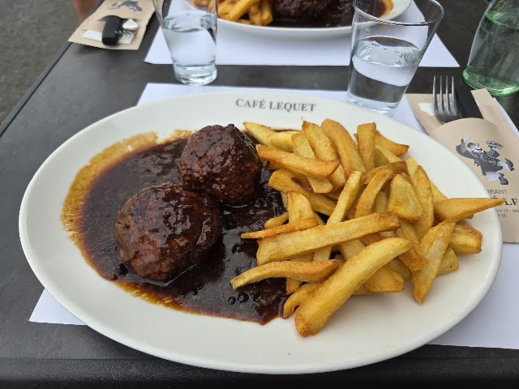
| 営業時間 | 月・水〜土 12:00-14:30 / 18:00-20:30、日 7:00-15:00 |
|---|---|
| 定休日 | 火曜 |
| 住所 | Quai sur Meuse 17, 4000 Liège |
| 予約 | 可(推奨) — ☎ 電話で予約 +32 4 222 21 34 ／ 公式サイト |
| 公式 | 公式サイト |
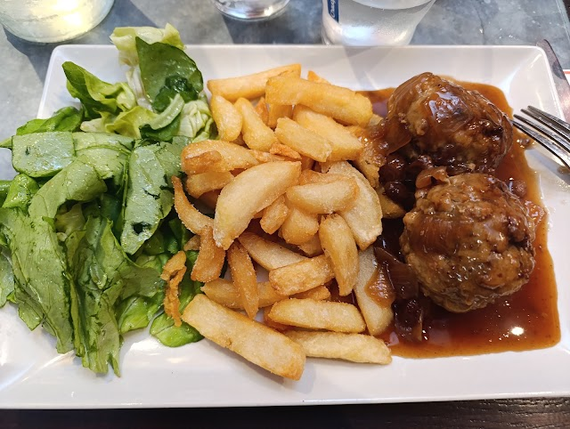
| 営業時間 | 火 12:00〜14:00 / 水 12:00〜14:00 / 6:30〜21:30 / 木 12:00〜14:00 / 金・土 12:00〜14:00 / 7:00〜21:30 |
|---|---|
| 定休日 | 月・日曜 |
| 住所 | Rue des Clarisses 12, 4000 Liège |
| 予約 | 可(推奨) — ☎ 電話で予約 +32 4 221 22 94 ／ 公式サイト |
| 公式 | 公式サイト |
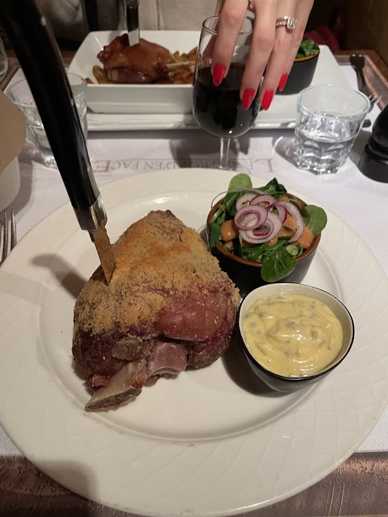
| 営業時間 | 水〜金 12:00〜13:30 / 7:00〜21:30 / 土 7:00〜21:30 / 日 12:00〜13:30 / 7:00〜21:30 |
|---|---|
| 定休日 | 月・火曜 |
| 住所 | Rue de la Goffe 8-10, 4000 Liège |
| 予約 | 可(推奨) — ☎ 電話で予約 +32 4 223 15 84 ／ 公式サイト |
| 公式 | 公式サイト |
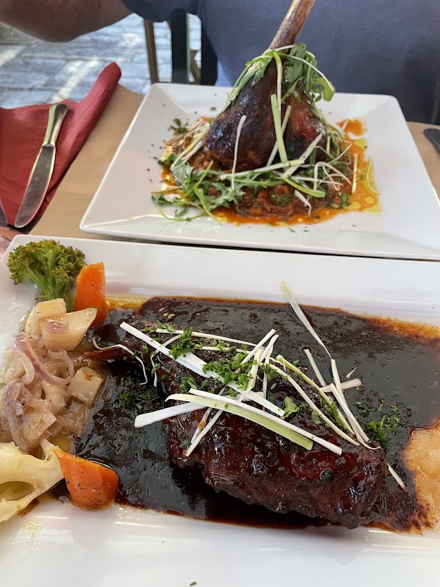
| 営業時間 | 火〜土 18:00-22:30、木・金・日 12:00-14:30 |
|---|---|
| 定休日 | 月曜 |
| 住所 | Rue Grande-Bêche 35, 4020 Liège |
| 予約 | 可(推奨) — ☎ 電話で予約 +32 475 58 36 91 ／ 公式サイト |
| 公式 | 公式サイト |
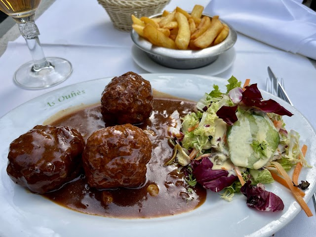
| 営業時間 | 月〜日 12:00〜14:30 / 6:00〜22:15 |
|---|---|
| 定休日 | なし |
| 住所 | Place du Marché 21, 4000 Liège |
| 予約 | 可(推奨) — ☎ 電話で予約 +32 4 223 32 25 ／ 公式サイト |
| 公式 | 公式サイト |
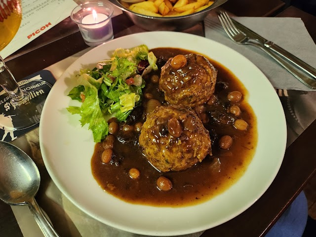
| 営業時間 | 水〜金 12:00〜14:00 / 6:00〜21:00 / 土 6:00〜21:00 / 日 12:00〜14:30 |
|---|---|
| 定休日 | 月・火曜 |
| 住所 | Rue des Écoliers 16, 4020 Liège |
| 予約 | 可(推奨) — ☎ 電話で予約 +32 497 50 14 96 ／ 公式サイト |
| 公式 | 公式サイト |
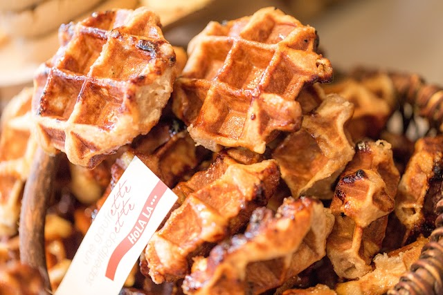
| 営業時間 | 月〜日 7:00〜22:00 |
|---|---|
| 定休日 | 月曜 |
| 住所 | Rue des Mineurs 20, 4000 Liège(7番地に姉妹店) |
| 予約 | 不要(店頭) — ☎ 電話で予約 +32 4 222 37 54 ／ 公式サイト |
| 公式 | 公式サイト |
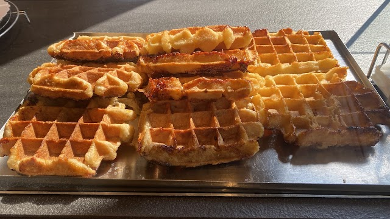
| 営業時間 | 月〜土 10:00-18:30 |
|---|---|
| 定休日 | 日曜 |
| 住所 | Place de la Cathédrale 2, 4000 Liège |
| 予約 | 不要(店頭) — ☎ 電話で予約 +32 4 223 67 81 ／ 公式サイト |
| 公式 | 公式サイト |
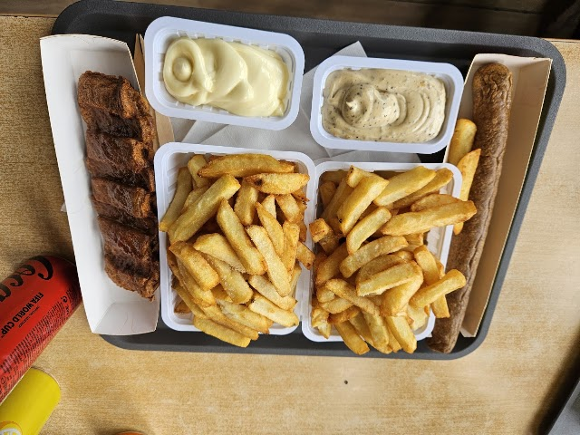
| 営業時間 | 毎日 11:00-21:00 |
|---|---|
| 定休日 | 無休 |
| 住所 | Rue de Bex 1, 4000 Liège |
| 予約 | 不要(店頭) — ☎ 電話で予約 +32 472 59 86 41 ／ 公式サイト |
| 公式 | 公式サイト |
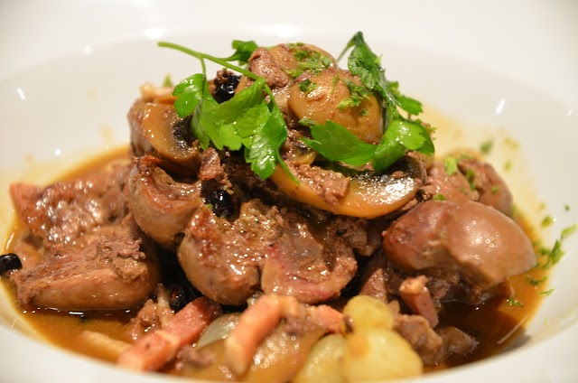
| 営業時間 | 月〜日 12:00〜22:00 |
|---|---|
| 定休日 | なし |
| 住所 | Rue des Guillemins 114, 4000 Liège |
| 予約 | 不要(店頭) — ☎ 電話で予約 +32 4 252 29 15 ／ 公式サイト |
| 公式 | 公式サイト |
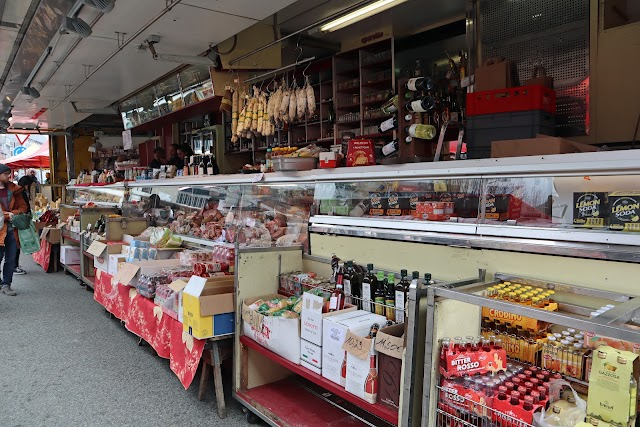
| 営業時間 | 毎週日曜 8:00-14:30 |
|---|---|
| 定休日 | 月〜土(日曜のみ開催) |
| 住所 | Quai de la Batte 一帯(Quai Van Hoegaerden〜Quai Saint-Léonard), 4000 Liège |
| 予約 | 不要(店頭) — 公式サイト |
| 公式 | 公式サイト |
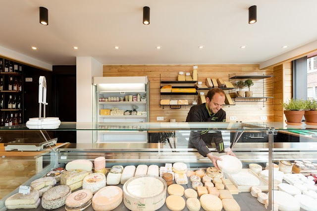
| 営業時間 | 火〜土 10:00-18:30、日 10:00-13:00 |
|---|---|
| 定休日 | 月曜 |
| 住所 | Rue des Vennes 229, 4020 Liège |
| 予約 | 不要(店頭) — ☎ 電話で予約 +32 4 266 46 07 ／ 公式サイト |
| 公式 | 公式サイト |
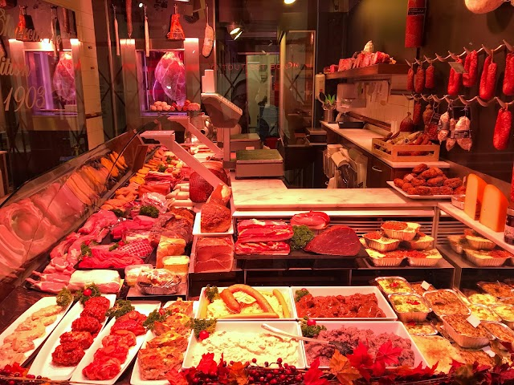
| 営業時間 | 火 9:00〜18:00 / 水〜土 8:30〜18:00 / 日 8:30〜14:00 |
|---|---|
| 定休日 | 月曜 |
| 住所 | En Neuvice 42, 4000 Liège |
| 予約 | 不要(店頭) — ☎ 電話で予約 +32 4 223 64 22 ／ 公式サイト |
| 公式 | 公式サイト |
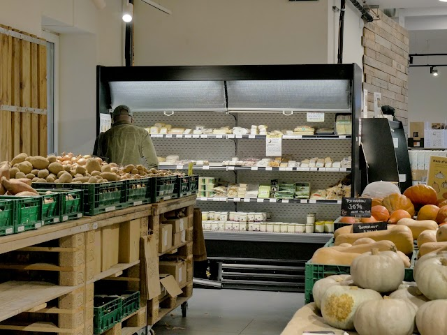
| 営業時間 | 火〜土 10:00-18:30、日 9:00-14:00 |
|---|---|
| 定休日 | 月曜 |
| 住所 | En Neuvice 34, 4000 Liège |
| 予約 | 不要(店頭) — ☎ 電話で予約 +32 4 358 51 53 ／ 公式サイト |
| 公式 | 公式サイト |
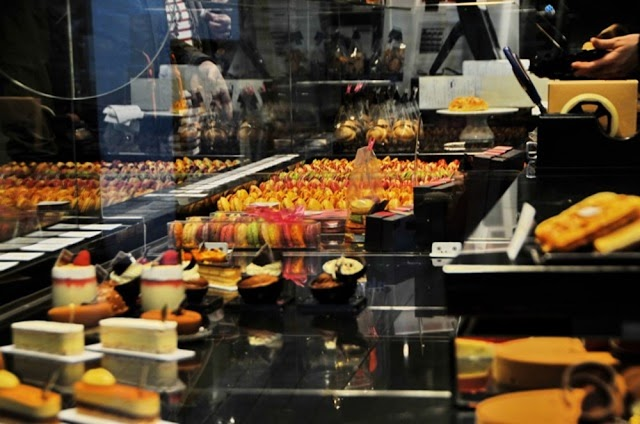
| 営業時間 | 火〜土 10:00〜18:00(ベルイル店は月〜土 10:00〜19:00) |
|---|---|
| 定休日 | 日曜・月曜(本店) |
| 住所 | Rue du Mouton Blanc 12, 4000 Liège |
| 予約 | 不要(店頭) — ☎ 電話で予約 +32 4 222 99 10 ／ 公式サイト |
| 公式 | 公式サイト |
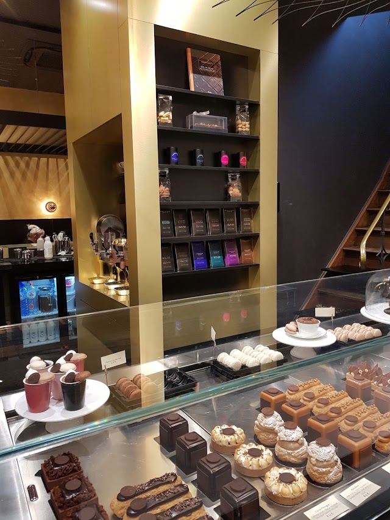
| 営業時間 | 月〜金 10:00〜18:00 / 土 10:00〜18:30 |
|---|---|
| 定休日 | 日曜 |
| 住所 | Rue du Pot d'Or 10B, 4000 Liège(アトリエ: Passage Lemonnier 30) |
| 予約 | 不要(店頭) — ☎ 電話で予約 +32 4 222 16 72 ／ 公式サイト |
| 公式 | 公式サイト |
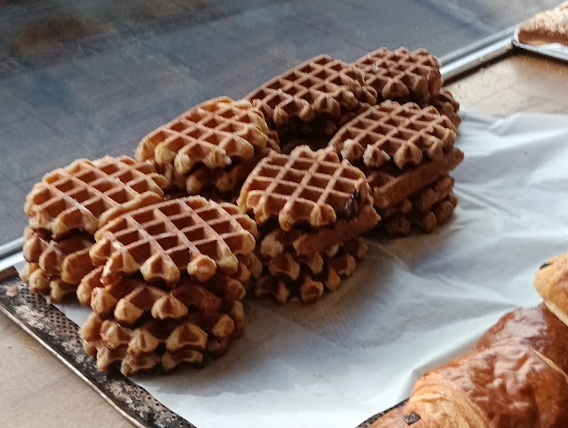
| 営業時間 | 月〜土 7:30-18:00、日 7:30-14:00 |
|---|---|
| 定休日 | 基本無休(要確認) |
| 住所 | Rue Puits-en-Sock 8, 4020 Liège |
| 予約 | 不要(店頭) — ☎ 電話で予約 +32 4 343 17 37 ／ 公式サイト |
| 公式 | 公式サイト |
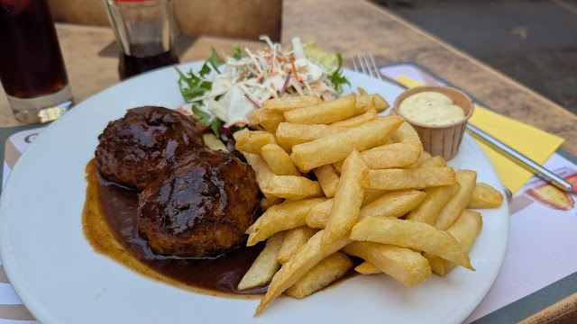
| 営業時間 | 月〜木 10:00〜1:00 / 金・土 10:00〜2:00 / 日 10:00〜1:00 |
|---|---|
| 定休日 | 無休 |
| 住所 | Rue de l'Épée 2, 4000 Liège(レストラン入口はRue du Stalon 1-3) |
| 予約 | 可(推奨) — ☎ 電話で予約 +32 4 250 67 83 ／ 公式サイト |
| 公式 | 公式サイト |
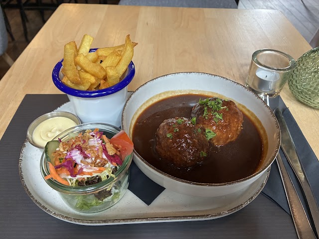
| 営業時間 | 木〜土 12:00〜0:00 / 日 12:00〜23:00 |
|---|---|
| 定休日 | 月・火・水曜 |
| 住所 | Impasse des Ursulines 14, 4000 Liège |
| 予約 | 可(推奨) — ☎ 電話で予約 +32 4 266 06 92 ／ 公式サイト |
| 公式 | 公式サイト |
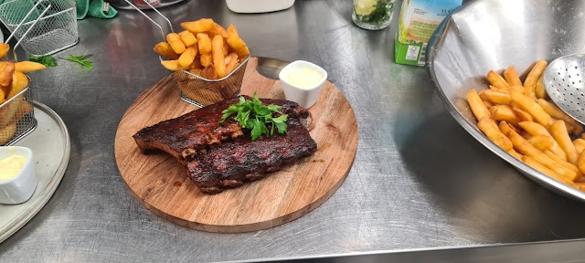
| 営業時間 | 月〜木 11:30-24:00、金・土 11:30-翌1:00、日 12:00-23:00 |
|---|---|
| 定休日 | 無休(要確認・現地マップ参照) |
| 住所 | Rue Saint-Gilles 149, 4000 Liège |
| 予約 | 可(推奨) — ☎ 電話で予約 +32 4 223 18 80 ／ 公式サイト |
| 公式 | 公式サイト |
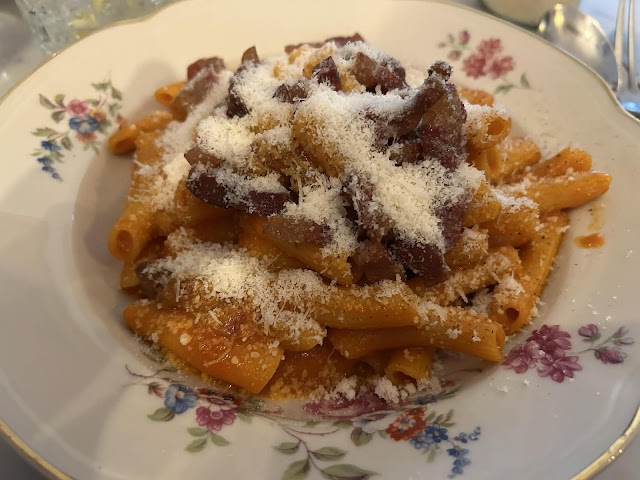
| 営業時間 | 月〜金 10:00〜16:00 / 土 10:00〜17:00 |
|---|---|
| 定休日 | 日曜 |
| 住所 | Rue Saint-Paul 5, 4000 Liège |
| 予約 | 可(推奨) — ☎ 電話で予約 +32 4 222 91 99 ／ 公式サイト |
| 公式 | 公式サイト |
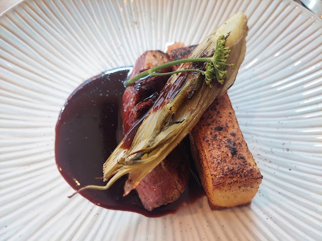
| 営業時間 | 水 12:00〜14:30 / 木・金 12:00〜14:30 / 7:00〜22:30 / 土 7:00〜22:30 |
|---|---|
| 定休日 | 日曜(土曜昼も休み) |
| 住所 | Rue Haute-Wez 191, 4030 Liège (Grivegnée) |
| 予約 | 可(推奨) — ☎ 電話で予約 +32 4 343 96 40 ／ 公式サイト |
| 公式 | 公式サイト |
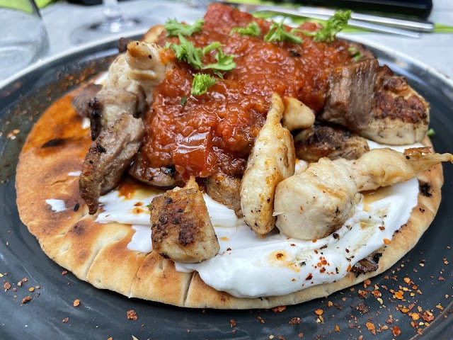
| 営業時間 | 12:00-14:00 / 18:00-21:30 |
|---|---|
| 定休日 | 日曜昼(夜は営業) |
| 住所 | Rue Souverain-Pont 32, 4000 Liège |
| 予約 | 可(推奨) — ☎ 電話で予約 +32 4 378 39 07 ／ 公式サイト |
| 公式 | 公式サイト |
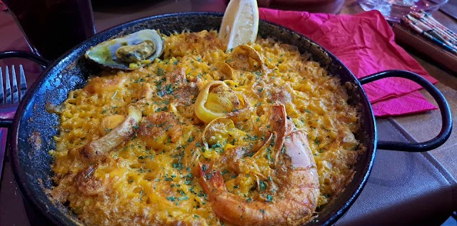
| 営業時間 | 火〜木 12:00-15:00 / 18:00-21:00、金 〜22:00、土 18:00-22:00、日 昼中心 |
|---|---|
| 定休日 | 月曜 |
| 住所 | Rue de la Goffe 20/22, 4000 Liège |
| 予約 | 可(推奨) — ☎ 電話で予約 +32 4 222 91 74 ／ 公式サイト |
| 公式 | 公式サイト |
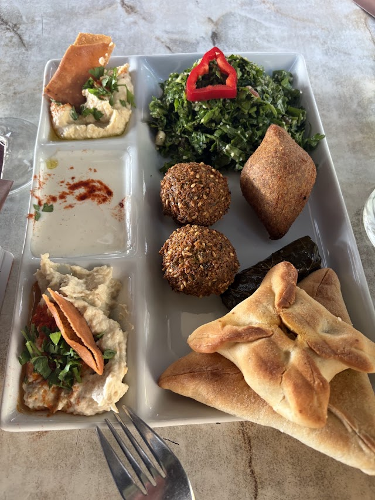
| 営業時間 | 月・木・日 12:00-15:00 / 18:00-22:00、金・土 〜22:30 |
|---|---|
| 定休日 | 火・水曜 |
| 住所 | Place du Marché 9, 4000 Liège |
| 予約 | 可(推奨) — ☎ 電話で予約 +32 470 93 87 36 ／ 公式サイト |
| 公式 | 公式サイト |
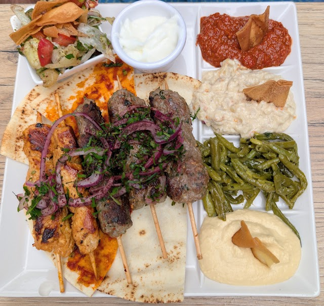
| 営業時間 | 火〜土 11:30-14:30 / 18:00-21:00 |
|---|---|
| 定休日 | 日・月曜 |
| 住所 | Place Saint-Michel 74, 4000 Liège |
| 予約 | 可(推奨) — ☎ 電話で予約 +32 484 52 70 10 ／ 公式サイト |
| 公式 | 公式サイト |
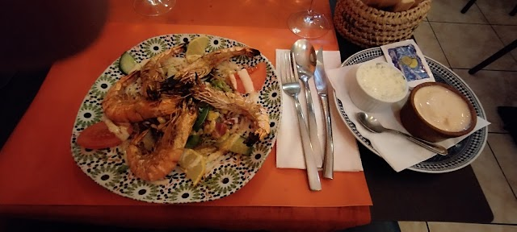
| 営業時間 | 月〜土 6:00〜22:00 / 日 12:00〜15:00 / 6:00〜22:00 |
|---|---|
| 定休日 | 火曜 |
| 住所 | Rue Roture 27, 4020 Liège |
| 予約 | 可(推奨) — ☎ 電話で予約 +32 4 343 17 07 |
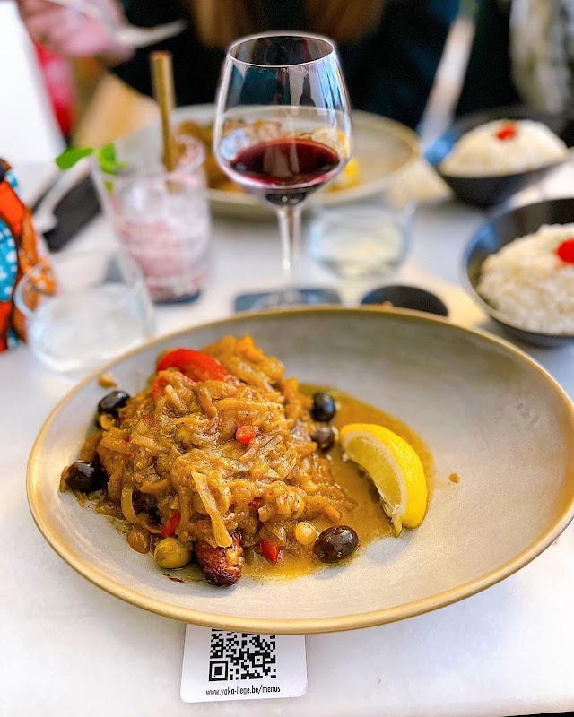
| 営業時間 | 月〜木 18:30〜0:00 / 金・土 18:00〜0:00 |
|---|---|
| 定休日 | 日曜 |
| 住所 | Rue de la Madeleine 33, 4000 Liège |
| 予約 | 可(推奨) — ☎ 電話で予約 +32 465 41 23 63 ／ 公式サイト |
| 公式 | 公式サイト |
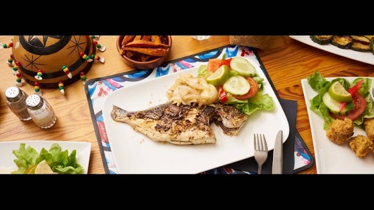
| 営業時間 | 18:00-23:00(金・土は〜24:00) |
|---|---|
| 定休日 | 無休(要確認・現地マップ参照) |
| 住所 | Rue Roture 70, 4020 Liège |
| 予約 | 可(推奨) — ☎ 電話で予約 +32 4 342 22 92 ／ 公式サイト |
| 公式 | 公式サイト |
| 営業時間 | 水〜土 11:00〜14:30 / 5:00〜22:30 / 日 5:00〜22:30 |
|---|---|
| 定休日 | 月・火曜 |
| 住所 | Rue Puits-en-Sock 59, 4020 Liège |
| 予約 | 可(推奨) — ☎ 電話で予約 +32 4 344 21 86 ／ 公式サイト |
| 公式 | 公式サイト |
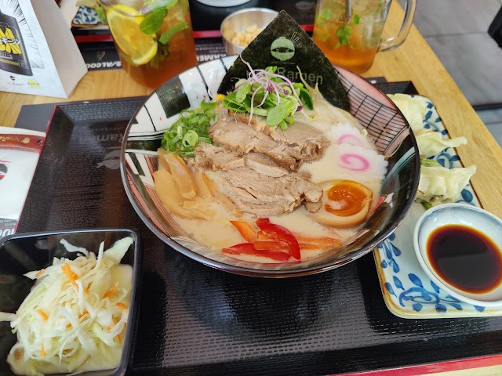
| 営業時間 | 月〜土 11:30-14:30 / 17:30-21:00 |
|---|---|
| 定休日 | 日曜(クラリス通り本店) |
| 住所 | Rue des Clarisses 6, 4000 Liège |
| 予約 | 可(推奨) — ☎ 電話で予約 +32 470 13 92 88 ／ 公式サイト |
| 公式 | 公式サイト |
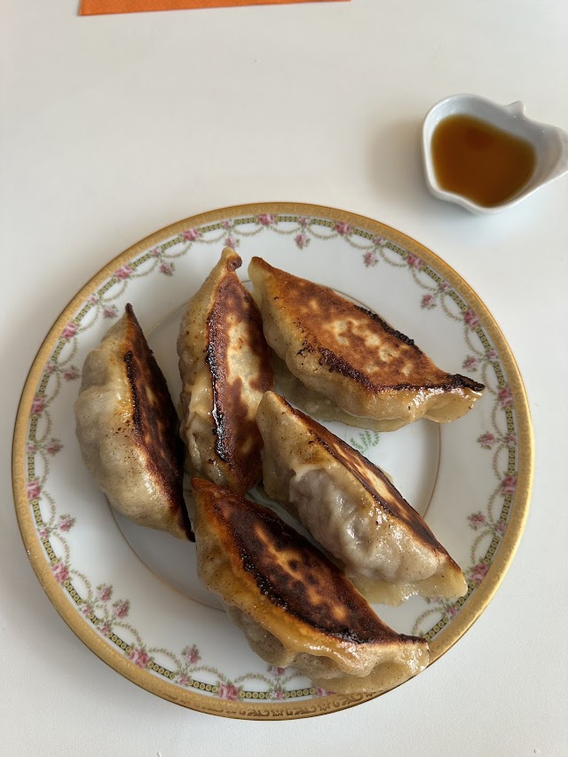
| 営業時間 | 月〜土 11:30-14:30 / 17:30-21:00 |
|---|---|
| 定休日 | 日曜 |
| 住所 | Rue de la Régence 4, 4000 Liège |
| 予約 | 可(推奨) — ☎ 電話で予約 +32 4 273 08 45 |
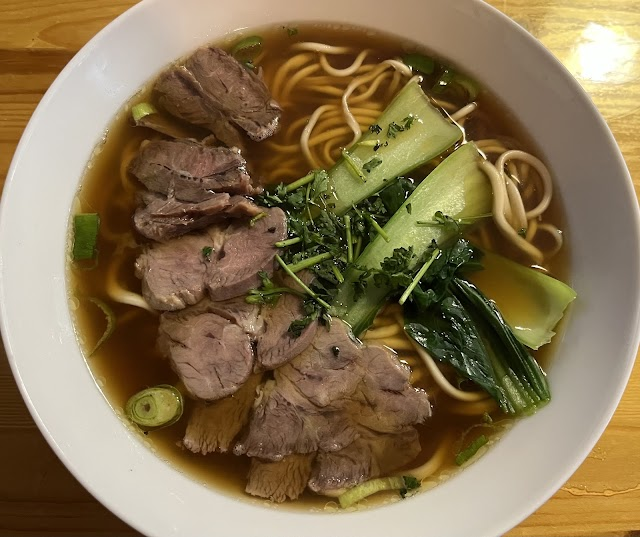
| 営業時間 | 月〜土 12:00〜14:30 / 6:00〜20:30 |
|---|---|
| 定休日 | 日曜 |
| 住所 | Rue de la Régence 10, 4000 Liège |
| 予約 | 可(推奨) — ☎ 電話で予約 +32 4 355 25 73 ／ 公式サイト |
| 公式 | 公式サイト |
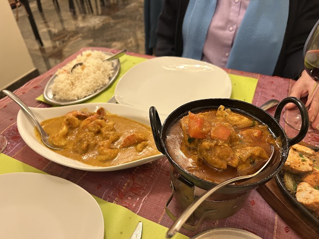
| 営業時間 | 12:00-15:00 / 18:00-23:00 |
|---|---|
| 定休日 | 火曜 |
| 住所 | Rue Grétry 110, 4020 Liège |
| 予約 | 可(推奨) — ☎ 電話で予約 +32 4 344 18 28 ／ 公式サイト |
| 公式 | 公式サイト |
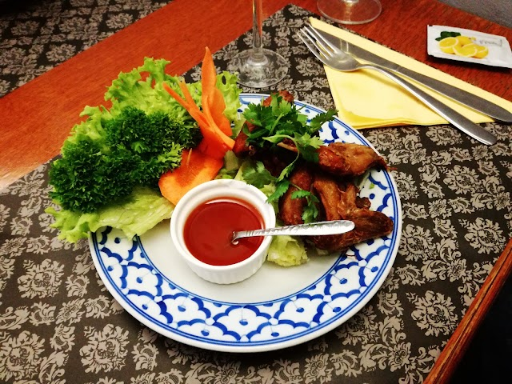
| 営業時間 | 火〜金 12:00〜14:30 / 6:30〜22:30 / 土 6:30〜22:30 / 日 12:00〜14:30 / 6:30〜22:30 |
|---|---|
| 定休日 | 月曜 |
| 住所 | Rue Surlet 57, 4020 Liège |
| 予約 | 可(推奨) — ☎ 電話で予約 +32 470 42 81 19 ／ 公式サイト |
| 公式 | 公式サイト |
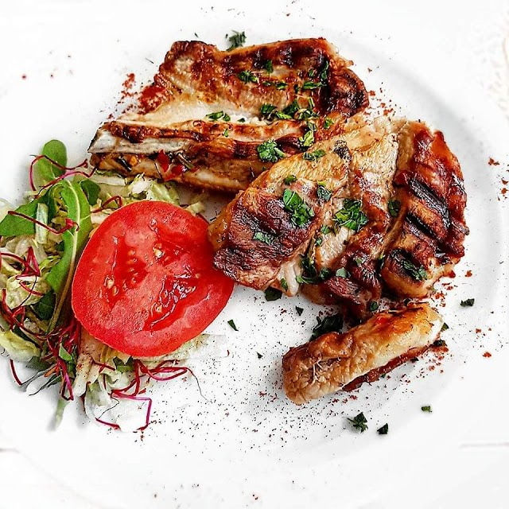
| 営業時間 | 火〜木 12:00〜14:00 / 6:00〜22:30 / 金・土 12:00〜14:00 / 6:00〜23:00 |
|---|---|
| 定休日 | 月・日曜 |
| 住所 | Rue Souverain-Pont 16, 4000 Liège |
| 予約 | 可(推奨) — ☎ 電話で予約 +32 4 232 17 27 ／ 公式サイト |
| 公式 | 公式サイト |
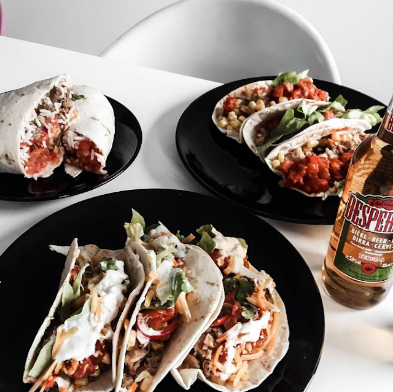
| 営業時間 | 火〜木 12:00-21:00、金・土 12:00-22:00 |
|---|---|
| 定休日 | 日・月曜 |
| 住所 | Rue Saint-Paul 6C, 4000 Liège |
| 予約 | 可(推奨) — ☎ 電話で予約 +32 491 18 23 72 ／ 公式サイト |
| 公式 | 公式サイト |
※Outremeuse地区(Roture通り)は世界の料理の宝庫。ギユマン駅利用ならLe Concordiaのフリッツを。
選考基準: ①個人・公式ブログ/現地メディアでの名店言及 ②複数レビューサイトでの口コミ・行列の突出 ③創業年・代替わりのある老舗 ④食の専門街・市場立地 ⑤受賞歴・ガイド掲載。写真は各店の料理・店内の実写(Google Maps投稿写真、© Google)。予約は各カードの「予約」欄のリンク(電話/予約サイト)から。営業時間・定休日は2026年7月時点の各種サイト情報で、変更があり得ます。